Instalación versión portable 2026/27
Índice
Guía de instalación de la versión portable
Se ha creado en la carpeta C:\Users\alumno\Documents la carpeta PortablePRG y ejecutamos desde una consola de cmd el comando ...
C:\Users\alumno> subst V: C:\Users\alumno\Documents\PortablePRG
Este comando crea una unidad virtual V: que apunta a la carpeta C:\Users\alumno\Documents\PortablePRG. De esta manera, podemos acceder a la carpeta PortablePRG como si fuera una unidad de disco independiente y evitaremos problemas con rutas absolutas largas en Windows.
Al acabar la instalación portable, tendremos la estructura de carpetas y archivos que se muestra en el árbol a la derecha...
Definición carpeta V:\dotnet_localconfig
Solo tendremos que crearla y en ella, se guardará de forma automática la configuración del SDK de .NET. Se crearán automáticamente pues carpetas como .dotnet con los datos de configuración del SDK de .NET. Además, también almacenará la caché de paquetes descargados desde el gestor de paquetes NuGet en .nuget, así como otros archivos de configuración y herramientas relacionados con el SDK de .NET.
Nota
Si hubiéramos instalado el SDK de .NET de forma 'normal', esto es, a través del instalador. La configuración del mismo se guardaría en la carpeta C:\Users\alumno\.dotnet para nuestro usuario alumno.
Carpeta V:\dotnet
Para descargarla hemos ido a la página donde están todas versiones de .NET 10 SDK.
Como se aprecia en la imagen hemos buscado la versión 10.0.10 del core y nos hemos bajado un zip con los binarios para Windows x64 de la versión 10.0.302 para el core anterior.
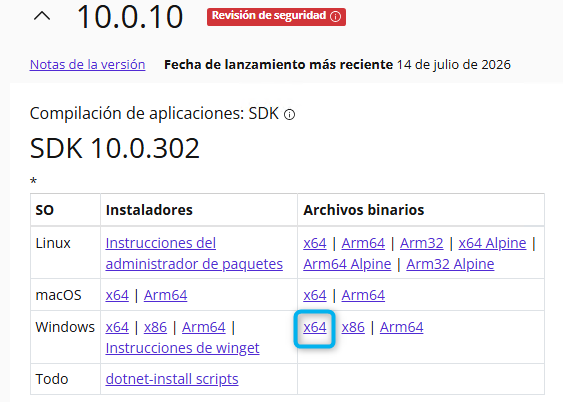
Si descomprimimos el zip descargado (sdk-10.0.302-windows-x64-binaries-zip) en la carpeta dotnet aparecerán muchas carpetas y archivos pero los más importantes son la carpeta sdk donde se encuentran los diferentes SDKs de .NET y la carpeta shared donde se encuentran los diferentes runtimes de .NET. Comprobaremos que la versión de 10.0.302 sea la que tengamos instalada en la carpeta sdk.
Carpeta V:\VSCode
Descargaremos la versión la portable .zip. (x64) de Visual Studio Code desde su página oficial.
Nota
Para el ejemplo de este curso, se ha descargado la versión 1.129.1 (VSCode-win32-x64-1.129.1.zip) de Visual Studio Code.

Tras descomprimirla en VSCode tendremos un árbol de carpetas donde deberemos crear una carpeta data.
Al ejecutar por primera vez el editor, dentro de data creara la carpeta user-data donde se guardarán los datos de configuración del editor y la carpeta extensions donde se guardarán las extensiones que instalemos. Además, si tenemos más de un proyecto abierto, se creará la carpeta shared-data donde se guardarán los datos compartidos entre los diferentes proyectos abiertos, está última podremos borrarla antes d finalizar la instalación.
Nota
Si quisiéramos actualizar la versión de VS Code, deberíamos volver a descargar la nueva versión y descomprimirla en la carpeta VSCode. Puedes ser interesante borra antes todo el contenido menos la carpeta data o solo la carpeta con numeración 8a7abeba6e que aparece en la imagen anterior, ya que es la carpeta donde se guardan los datos de configuración de la versión anterior.
Definiendo el script de inicio con el entrono
Creamos un archivo inicio.cmd en la carpeta raíz del proyecto PortablePRG con el siguiente contenido:
@echo off
rem Crea una unidad virtual V: que apunta al directorio actual
subst V: /D
subst V: .
rem Cambia al directorio raíz del proyecto
cd /d V:\
rem Usa la unidad virtual como raíz del proyecto
set ROOT=V:\
rem Establece DOTNET_ROOT para que apunte
rem a la instalación de .NET en la carpeta raíz del proyecto
set DOTNET_ROOT=%ROOT%dotnet
set DOTNET_MULTILEVEL_LOOKUP=0
rem Establece DOTNET_CLI_HOME para que apunte
rem a la carpeta de configuración local de .NET
set DOTNET_CLI_HOME=%ROOT%dotnet_localconfig
rem Establece DOTNET_MSBUILD_SDK_RESOLVER_CLI_DIR para que apunte
rem a la instalación de .NET en la carpeta raíz del proyecto
set DOTNET_MSBUILD_SDK_RESOLVER_CLI_DIR=%DOTNET_ROOT%
rem Establece la variable de entorno PATH para incluir
rem la ruta de .NET y las herramientas de .NET
set DOTNET_TOOLS=%DOTNET_CLI_HOME%\.dotnet\tools
set PATH=%DOTNET_ROOT%;%DOTNET_TOOLS%;%PATH%
rem Inicia Visual Studio Code desde la carpeta raíz del proyecto
start "" "%ROOT%vscode\Code.exe"
Básicamente como se observa en el script, lo que hacemos es establecer las variables de entorno necesarias para que el SDK de .NET funcione correctamente desde la carpeta dotnet y la configuración del mismo se guarde en la carpeta dotnet_localconfig. Además, añadimos la ruta de .dotnet\tools al PATH para poder ejecutar herramientas instaladas globalmente con dotnet tool install -g <tool> aunque no es necesario para este curso. Finalmente, nos situamos en la PortablePRG y ejecutamos Code.exe para abrir el editor de código.
Primera ejecución y definición de perfiles
Nada más ejecutar el script inicio.cmd se abrirá el editor de código y nos pedirá que definamos un perfil para guardar la configuración del mismo pero cerraremos el diálogo sin hacerlo.
Seleccionamos la rueda de configuración abajo a la izquierda y seleccionamos Profiles se abrirá un diálogo pulsaremos el botón New Profile.
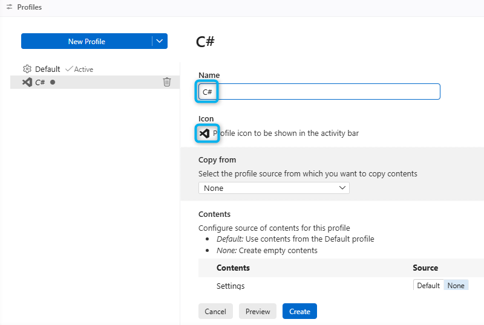
Como se ve en la imagen le hemos llamado C# y hemos cambiado el icono para poder distinguir si está activado o no. Tras crearlo marcaremos la casilla Use this profile as the default profile for new windows y pulsaremos el botón Set as default.
Volveremos a la rueda de configuración y seleccionaremos Profile (Default) > C#.
Instalación de extensiones
-
Instalaremos Spanish Language Pack for Visual Studio Code para traducir VSCode al Castellano. Aunque no es necesario, es recomendable para los que no tienen un buen nivel de inglés.
El editor nos avisará de reiniciar para aplicar los cambios de idioma.
-
Instalaremos Visual Studio Keymap Me permitirá configurar el teclado como si estuviéramos usando "su hermano mayor" el IDE de Visual Studio.
-
Instalaremos Error Lens la cual nos permitirá ver los errores y advertencias de nuestro código directamente en el editor, sin necesidad de abrir la pestaña de problemas.
-
Instalaremos el paquete de extensiones C# Dev Kit Como indica su nombre es una extensión de extensiones. Nos instalará las siguientes extensiones que son las que realmente nos permitirán trabajar con C# en VS Code.
- .NET Runtime Install Tool Como su nombre indica nos instalará automáticamente la versión de .NET SDK si no está instalada pero no de manera portable.
- C# Microsoft Anteriormente conocida como OmniSharp, es la extensión oficial del Microsoft para VSCode para el desarrollo de aplicaciones en .NET con C#.
Importante
Una vez instaladas todas las extensiones, iremos una por una desactivando el check el Actualización Automática.
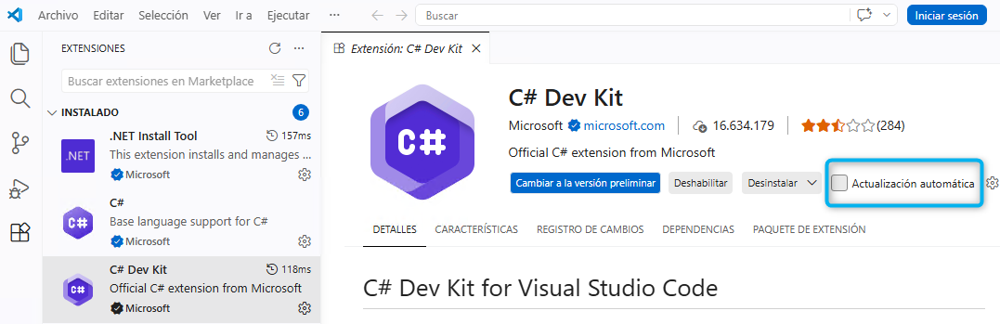
Configuración del perfil y extensiones
Podemos ir configurando valor a valor, pero una forma de configurarlos rápidamente es abriendo el contenido del archivo settings.json. Para abrirlo, pulsaremos Ctrl + Shift + P y escribiremos *Preferencias: Abrir configuración de usuario (JSON) y pulsaremos Enter. Se abrirá el archivo settings.json donde copiaremos la siguiente configuración, sustituyendo la que hubiese:
{
"omnisharp.sdkIncludePrereleases": false,
"terminal.integrated.suggest.cdPath": "relative",
"csharp.debug.console": "integratedTerminal",
"terminal.integrated.profiles.windows": {
"PowerShell": {
"source": "PowerShell",
"icon": "terminal-powershell"
},
"Command Prompt": {
"path": "C:\\WINDOWS\\System32\\cmd.exe",
"args": []
}
},
"terminal.integrated.defaultProfile.windows": "Command Prompt",
"dotnet.projects.enableFileBasedPrograms": false,
"files.autoSave": "afterDelay",
"window.zoomLevel": 1
}
Una tabla resumen de la configuración que hemos realizado es la siguiente:
| Configuración | Descripción |
|---|---|
omnisharp.sdkIncludePrereleases = false |
Desactiva la instalación de versiones preliminares del SDK de .NET. |
terminal.integrated.suggest.cdPath = relative |
Configura la terminal integrada para sugerir rutas relativas al cambiar de directorio. |
csharp.debug.console = integratedTerminal |
Configura la consola de depuración de C# para usar la terminal integrada. |
terminal.integrated.defaultProfile.windows = Command Prompt |
Establece el perfil de terminal predeterminado en Windows como Command Prompt. |
dotnet.projects.enableFileBasedPrograms = false |
Desactiva la habilitación de programas basados en archivos para proyectos de .NET. |
files.autoSave = afterDelay |
Configura la función de guardado automático de archivos para que se active después de un retraso. |
window.zoomLevel = 1 |
Ajusta el nivel de zoom de la ventana del editor a 1 (+20%) |
Desactivando la actualización de VSCode
Accedemos a la configuración de VSCode y buscamos update.mode y lo configuramos a none como se muestra en la imágenes de ejemplo. Esta configuración es global y se aplicará a todos los perfiles de VSCode.
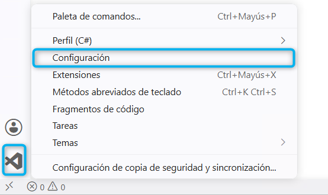
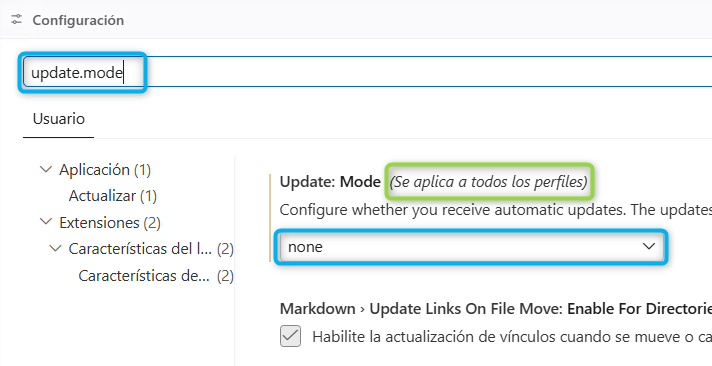
Primera ejecución de dotnet desde el entorno
Para que tengan efecto las variables de entorno definidas. Podemos hacerlo a través de un Terminal de VSCode seleccionando Menu > Terminal > Nuevo Terminal (Ctrl + Shift + ñ) para abrir una consola cmd dentro del VSCode.
Aunque es más recomendable abrir un cmd directamente sin necesidad de abrir VSCode, puedes crear en siguiente script V:\cli.cmd con la siguiente configuración que configurará las variables de entorno necesarias para ejecutar nuestro dotnet local desde la consola de cmd.
@echo off
subst V: .
set "ROOT=V:\"
set "DOTNET_ROOT=%ROOT%dotnet"
set "DOTNET_MULTILEVEL_LOOKUP=0"
set "DOTNET_CLI_HOME=%ROOT%dotnet_localconfig"
set "DOTNET_MSBUILD_SDK_RESOLVER_CLI_DIR=%DOTNET_ROOT%"
set "DOTNET_TOOLS=%DOTNET_CLI_HOME%\.dotnet\tools"
set "PATH=%DOTNET_ROOT%;%DOTNET_TOOLS%;%PATH%"
start "Entorno .NET Local" cmd /k "cd /d %ROOT%proyectos"
Crearemos la carpeta V:\proyectos ejecitaremos el script V:\cli.cmd para crear un nuevo proyecto de ejemplo y ejecutarlo. Los comandos a ejecutar son los siguientes:
V:\proyectos> mkdir ejemplo V:\proyectos> cd ejemplo V:\proyectos\ejemplo> dotnet new list V:\proyectos\ejemplo> dotnet new console -n holamundo V:\proyectos\ejemplo> dotnet new sln -n ejemplo V:\proyectos\ejemplo> dotnet sln add holamundo\holamundo.csproj V:\proyectos\ejemplo> dotnet build V:\proyectos\ejemplo> dotnet run --project holamundo\holamundo.csproj Hello, World!
Abro el proyecto que acabamos de crear con Archivo > Abrir Carpeta y selecciono la carpeta V:\proyectos\ejemplo.
Al abrir el primer proyecto C# Dev Kit nos instalará ciertas herramientas que necesita y nos pedirá añadir la con la solución a las áreas de trabajo de confianza.
Pulsaremos el botón Agregar carpeta y añadiremos la carpeta V:\proyectos de estas manera todos los proyectos que creemos dentro de esta carpeta serán de confianza y no nos volverá a preguntar.
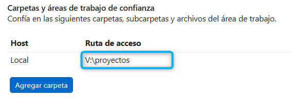
Tras esto:
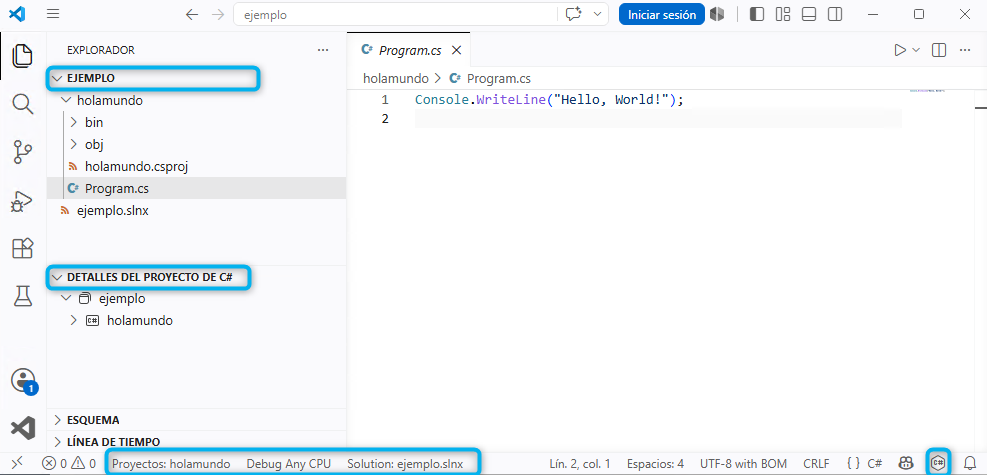
Advertencia
Es muy importante que en la barra de estado inferior detectará la solución ejemplo.slnx y el proyecto holamundo. Si no nos aparece, es posible que tengamos que cerrar y volver a abrir el editor de código.
Además, tras ejecutar nuestros primeros comandos de dotnet, podremos comprobar que se han creado automáticamente las carpetas .dotnet y .templateengine dentro de la carpeta V:\dotnet_localconfig.
Creación del perfil para examen
Vamos a la opción donde podemos gestionar todos los perfiles y seleccionamos el perfil creado de C# y en el menú de los tres puntos seleccionamos Duplicar....
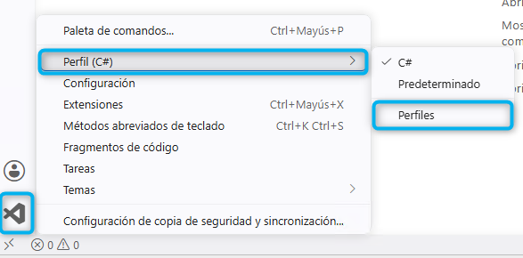
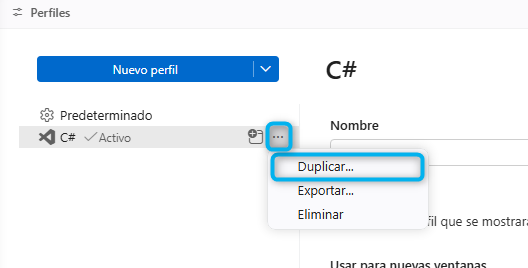
Se creará un nuevo perfil llamado C# (1) y lo renombraremos a Examen C# y le cambiaremos el icono para poder distinguirlo del perfil de desarrollo, por ejemplo el propuesto en la imagen de ejemplo siguiente ...
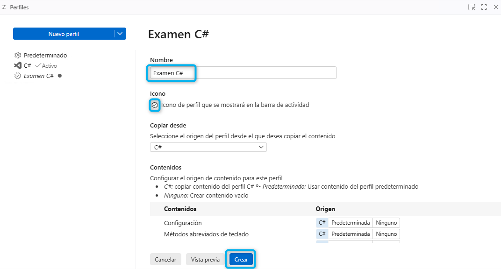
Una vez creado el perfil, lo seleccionamos y desactivamos en la configuración de VSCode la opción de iniciar sesión con GitHub Copilot como se muestra en la imagen de ejemplo siguiente...
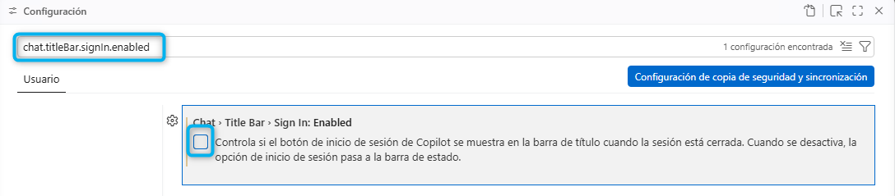